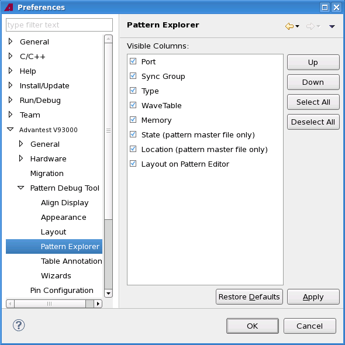

Pattern Explorer preference page
On the preference page you specify which columns are visible in the Pattern Explorer.

Functional changes
- Introduced in SmarTest 6.5.2
On the preference page you specify which columns are visible in the Pattern Explorer.
